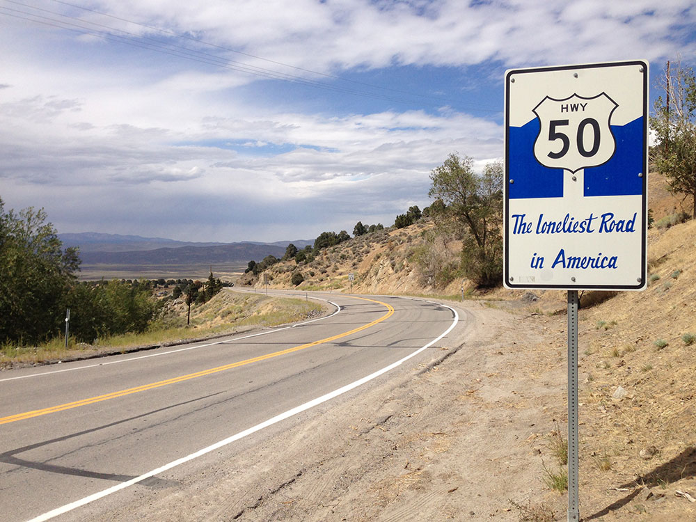
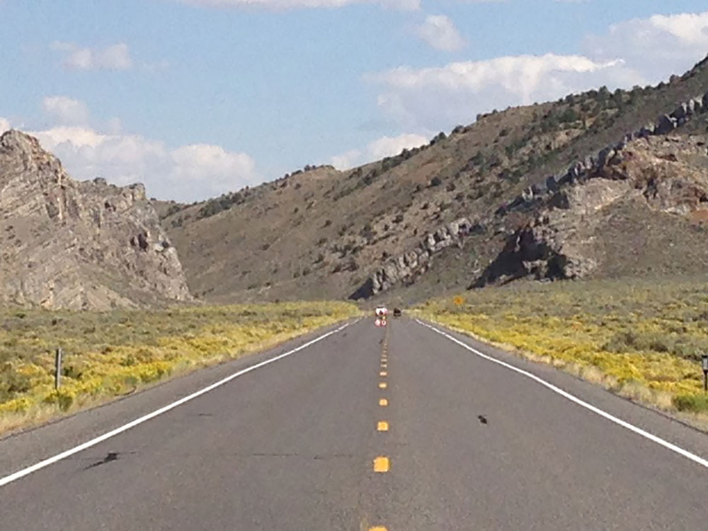
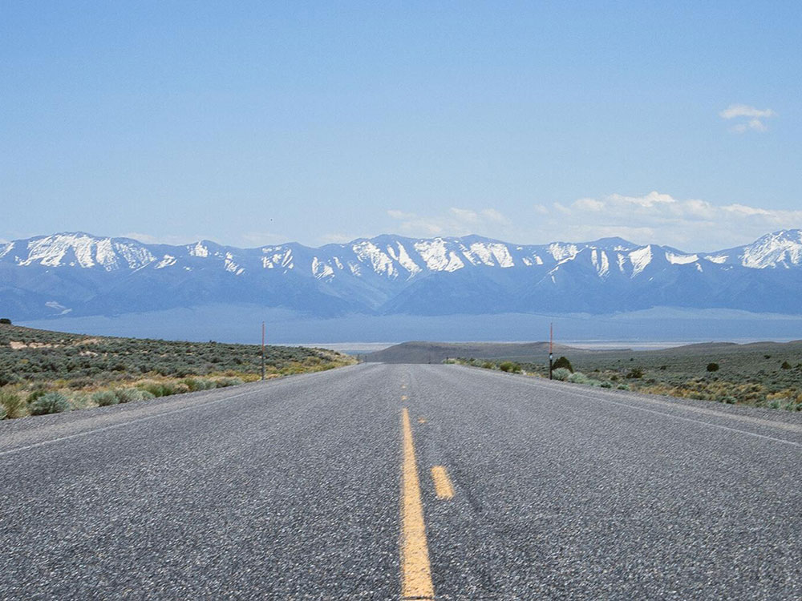

.jpg){kind=link}
Loneliest Road in America Travel Guide
Transcontinental highway where the Nevada portion crosses the center of the state and was named "The Loneliest Road in America" originating from large desolate areas traversed by the route, with few or no signs of civilization
Places to See on the Loneliest Road in America
Mobilus In Mobili, CC BY-SA 2.0, via Wikimedia Commons; Image Size Adjusted
Austin
Historic mining community featuring nineteenth-century architecture, preserved churches, mountain scenery, museums, saloons, and outdoor recreation opportunities along Nevada's celebrated Highway 50 corridor.

Quintin Soloviev, CC BY 4.0, via Wikimedia Commons; Image Size Adjusted

Carson City
Historic capital city featuring museums, government buildings, and access to scenic outdoor recreation with a blend of cultural attractions and mountain landscapes.
Mobilus In Mobili, CC BY-SA 2.0, via Wikimedia Commons; Image Size Adjusted
Churchill County Museum
Regional history museum featuring engaging exhibits, artifacts, historic vehicles, Native American collections, mining displays, and interactive experiences that tell the story of life in Nevada's Lahontan Valley.
Mobilus In Mobili, CC BY-SA 2.0, via Wikimedia Commons; Image Size Adjusted
Dayton
Historic community featuring preserved nineteenth-century buildings, pioneer landmarks, museums, and cultural sites that reflect the earliest years of Nevada settlement and mining history.
Mobilus In Mobili, CC BY-SA 2.0, via Wikimedia Commons; Image Size Adjusted
Dayton State Park
Riverside recreation area featuring historic mining ruins, shaded picnic grounds, campsites, wildlife habitat, and short trails that preserve an important chapter of Nevada's gold and silver mining heritage.
Mobilus In Mobili, CC BY-SA 2.0, via Wikimedia Commons; Image Size Adjusted
Ely
Historic railroad and mining community featuring museums, public art, outdoor recreation, cultural attractions, and well-preserved landmarks that serve as a gateway to eastern Nevada's mountain ranges and archaeological treasures.
Mobilus In Mobili, CC BY-SA 2.0, via Wikimedia Commons; Image Size Adjusted
Eureka
Historic mining community featuring remarkably preserved nineteenth-century architecture, museums, theaters, and cultural landmarks that showcase one of Nevada's most successful silver boomtowns.
Mobilus In Mobili, CC BY-SA 2.0, via Wikimedia Commons; Image Size Adjusted
Fallon
High-desert community known for agricultural heritage, wetlands wildlife viewing, outdoor recreation, museums, public art, and historic attractions that celebrate Nevada's pioneer and ranching traditions.
Mobilus In Mobili, CC BY-SA 2.0, via Wikimedia Commons; Image Size Adjusted
Fort Churchill State Historic Park
Preserved adobe military ruins, historic trails, riverfront recreation areas, and a restored nineteenth-century stage station that interpret the history of the American West, the Pony Express, and early Nevada settlement.
Mobilus In Mobili, CC BY-SA 2.0, via Wikimedia Commons; Image Size Adjusted
Grimes Point / Hidden Cave Archaeological Site
Archaeological area featuring ancient petroglyphs, prehistoric cultural sites, interpretive trails, and a significant Native American cave that preserve thousands of years of human history in the Great Basin.
Mobilus In Mobili, CC BY-SA 2.0, via Wikimedia Commons; Image Size Adjusted
Hickison Petroglyph Recreation Area
Ancient rock art destination featuring interpretive hiking trails, prehistoric petroglyph panels, panoramic mountain views, picnic areas, and primitive camping opportunities in the heart of Nevada's Great Basin.
Mobilus In Mobili, CC BY-SA 2.0, via Wikimedia Commons; Image Size Adjusted
Sand Mountain Recreation Area
Massive Great Basin sand dune recreation area featuring off-highway vehicle riding, sandboarding, primitive camping, historic Pony Express sites, and striking desert landscapes.
Mobilus In Mobili, CC BY-SA 2.0, via Wikimedia Commons; Image Size Adjusted
Spencer Hot Springs
Remote geothermal soaking area featuring natural hot springs, historic cowboy tubs, desert camping opportunities, wildlife viewing, and panoramic Great Basin mountain scenery.
Mobilus In Mobili, CC BY-SA 2.0, via Wikimedia Commons; Image Size Adjusted
Stokes Castle
Three-story granite tower built during Nevada's silver mining boom, offering historic architecture, panoramic valley views, and a distinctive landmark that reflects the wealth and ambition of the late nineteenth century.
Mobilus In Mobili, CC BY-SA 2.0, via Wikimedia Commons; Image Size Adjusted
Ward Charcoal Ovens State Historic Park
Remarkably preserved stone charcoal ovens surrounded by mountain landscapes, interpretive trails, picnic areas, campgrounds, and historic mining features that illustrate Nevada's nineteenth-century silver boom.
Overview
The Loneliest Road in America is the stretch of U.S. Route 50 across central Nevada, about 287 miles from Fernley to the Utah border. Life magazine gave it the name in 1986 as a warning to drivers, and Nevada turned it into a tourism slogan. Mountain ranges follow one another, with long straight stretches, mining towns, and a "passport" you can get stamped along the way. Gas stations are far apart, so fill up in towns like Fallon, Austin, Eureka, and Ely.
Highlights
- Eureka and Ely: historic mining towns with opera houses and old railroad museums
- Austin: a small silver-mining town at Austin Summit
- Great Basin National Park: a detour of about an hour to the east from Ely
This article uses material from the Wikipedia article "Loneliest Road in America / U.S. Route 50 in Nevada", which is released under the Creative Commons Attribution-Share-Alike License 3.0




